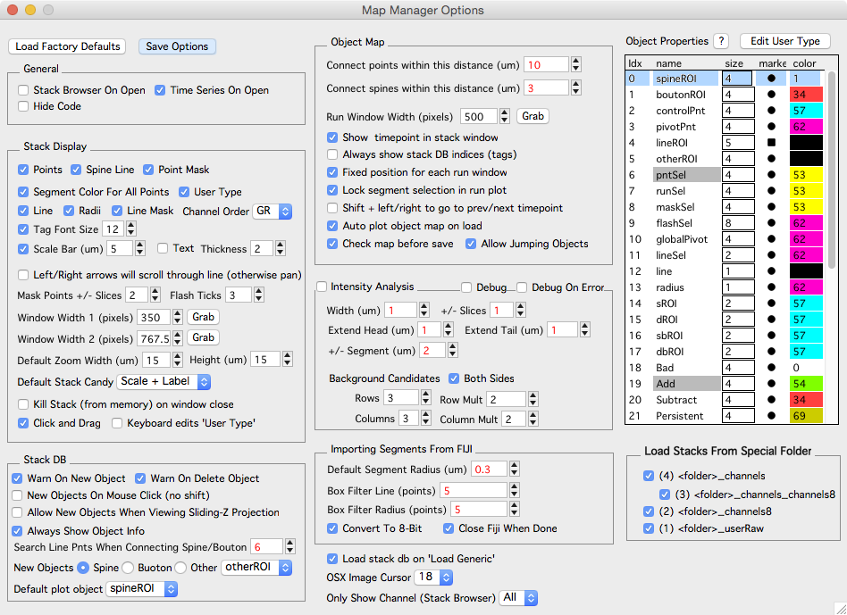
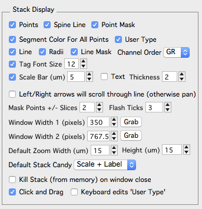
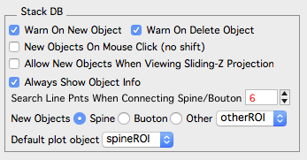
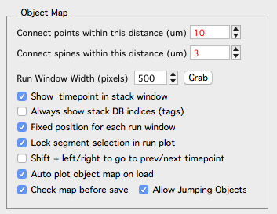
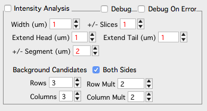
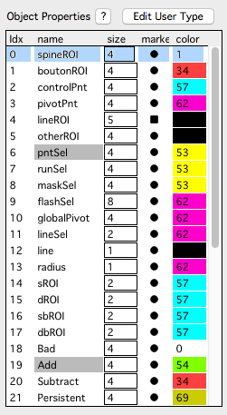

Options
The Map Manager Options panel provides global options to control the behavior of Map Manager. Options can be saved using the Save Options button. Values shown in red will effect analysis and those in black effect program behavior..
The options panel is opened from the main menu ‘MapManager - Options’.

General
- Stack Browser On Open. xxx
- Time Series On Open. yyy
- Hide Code. zzz
Stack Display

Options that control the display of stack windows. Changes will be applied the next time a stack window is opened, or for already opened stack windows pressing keyboard ‘r’ will refresh the display.
-
Points. Toggle stack db objects.
-
Spine Line. Toggle the line connecting the spine head to the segment radius.
-
Point mask. Turn point masking on/off. By default, stack db objects are shown and not shown (they are masked) based on the image plane you are viewing.
-
Segment Color For All Points. xxx
-
User Type
-
Line. Toggle the segment backbone line and radii lines.
-
Radii. xxx
-
Line Mask. xxx
-
Channel Order
-
Tag Font Size. In a stack window, the tags are the stack db point number. In a map, the tags are the run number of the point.
-
Scale Bar. Displayed in the bottom right of all stack windows. Cycle through stack window display options with keyboard shift+c
-
Left/Right Arrows Will Scroll Through Line (Otherwise Pan)
-
Mask Points
-
Flash Ticks
-
Window With 1/2
-
Default Zoom
-
Default Stack Candy
-
Kill Stack (from memory) on window close
-
Click and Drag
-
Keyboard edits ‘User Type’
Stack DB

Warn On New Objects Warn On Delete Objects New Objects On Mouse Click (no shift) Allow New Objects When Viewing Sliding Z-Projection
Stack Window Size Two default stack window sizes (screen pixels). Capture the size of an open Stack window with ‘C’ button.
Mask Points +/- Slices The number of slices above and below each point to show the point in stack windows.
Flash Ticks
ScanImage, 1x zoom, 1024x1024 pixels (um/pixel) The x/y voxel size in um/voxel for importing ScanImage files. Line points to search when connecting spine/bouton Default Segment Radius (um)
Left/Right arrows will scroll through line (otherwise pan) Show Pixel Intensity (display in history) Prints the pixel intensity and x/y coordinates as mouse is moved over a stack window image.
Grid Spacing (um) Display a grid on the images in a stack window. For the grid to display, stack window must be showing x/y axis. Use ‘shift+c’ to cycle through different stack window candy. Or set the default using ‘Default Stack Candy’ popup.
New Object (Shift+Click) The default object to make on shift+click. Default plot object Default Stack Candy
Object Map

Default Run +/-. Set the number of sessions to display when selecting right-click menu ‘Plot Run +- n’.
Check map before save. xxx
Run Window Width (pixels). The size of each window in a spine run.
Default Zoom Width/Height (um). When snapping to a spine, the default zoom. The width/height of the image zoom in um.
Connect points within this distance (um). When auto connecting points in a map and generating a Guess in Find points.
Connect spines within this distance (um). When auto connecting spines in a map and generating a Guess in Find points. This is the distance from the segment pivot points along a dendritic segment (um). You can see this distance (pDist) in the Point Info panel of a stack.
Always show stack DB indices (tags). xxx Fixed posiiton for each run window. xxx Lock segment selection in run plot. xxx Shift + left/right to go to prev/next timepoint. xxx Auto plot object map on load. xxx
Intensity Analysis

Turn intensity analysis on/off with the ‘Intensity Analysis’ checkbox. Be sure to refresh any open stack windows.
Width (um) +/- Slices Extend Head (um) Extend Tail (um) +/- Segment (um)
Debug Debug On Error
Importing Segments From FIJI
Default Segment Radius (um)
Box Filter Line (points)
Box Filter Radius (points)
Convert To 8-bit. Will convert to 8-bit (in Fiji). This makes line fit much faster.
Close Fiji When Done
Miscellaneous

A table to set how annotations are displayed. Right-click on ‘marker’ or ‘color’ to set. Double-click on ‘size’ to set. Note, ‘size’ is in arbitrary Igor Pro centric units.
| Idx | Name | Meaning |
|---|---|---|
| 0 | spineROI | Spine marker in stack and map plot |
| 1 | boutonROI | |
| 2 | controlPnt | |
| 3 | pivotPnt | |
| 4 | lineROI | |
| 5 | otherROI | |
| 6 | pntSel | User point selection |
| 7 | runSel | User run selection |
| 8 | maskSel | Mask selection |
| 9 | flashSel | Flashes to make selection more obvious |
| 10 | globalPivot | |
| 11 | lineSel | |
| 12 | line | Segment tracing line |
| 13 | radius | Segment tracing radius |
| 14 | sROI | Spine intensity ROI |
| 15 | dROI | Dendrite/segment intensity ROI |
| 16 | sbROI | Spine background ROI |
| 17 | dbROI | Dendrite/segment background ROI |
| 18 | Bad | Bad annotations |
| 19 | Add | Added |
| 20 | Subtract | Subtracted |
| 21 | Persistent | Persistent |
| 22 | Transient | Transient |
| 23 | user1_1 | |
| 24 | user1_2 | |
| 25 | user1_3 | |
| 26 | user1_4 | |
| 27 | user1_5 | |
| 28 | User Type 0 | Markers for user type 0..9 |
| 29 | User Type 1 | |
| 30 | User Type 2 | |
| 31 | User Type 3 | |
| 32 | User Type 4 | |
| 33 | User Type 5 | |
| 34 | User Type 6 | |
| 35 | User Type 7 | |
| 36 | User Type 8 | |
| 37 | User Type 9 |
Load Stacks From Special Folder
Each of the check boxes will redirect the loading of image stacks to different folders. In particular, the channels8 option will load 8-bit versions which is useful to speed annotations of larger 16-bit images. See Fiji plugin bConvertTo8Bit_v5_.py to convert entire directories of tiff stacks to 8-bit.
Stack Browser Options

Additional option are available in the Stack Browser Options panel.
Open the Stack Browser Options panel using the ‘Options’ button in the stack browser.